Ghid complet pentru machiaj glow
Machiaj pas cu pas cu efect glow (glass skin)
Efect de ten sănătos, luminos și radiant
Top produse pentru machiaj luminos
Texturi lejere cu finish hidratant și strălucitor
Produse premium pentru machiaj glow
Efect „glass skin” și strălucire fără încărcarea tenului
Set buget pentru machiaj luminos (până la 500 MDL)
Set minimal pentru efect de piele radiantă și naturală
Programează-te la un make-up artist profesionist
Obține un machiaj care îți evidențiază pielea, creează efectul de „strălucire din interior” și arată natural în orice tip de lumină.
Ce este machiajul luminos
Machiajul luminos este o tehnică prin care pielea arată cât mai hidratată, netedă și radiantă din interior. Scopul principal este de a crea efectul unei pieli sănătoase, îngrijite și cu glow natural, fără încărcare sau acoperire grea.
Acest tip de machiaj este cunoscut și ca machiaj glow, dewy skin, glass skin sau machiaj luminos cu finish umed. Toate aceste denumiri descriu același concept: un ten proaspăt, luminos și natural, nu o acoperire densă.
Spre deosebire de machiajul mat, aici accentul cade pe lumină și textură. Se folosesc straturi ușoare, produse hidratante și formule cu efect subtil de strălucire. Pielea trebuie să pară „vie”, să reflecte lumina și să ofere un efect de strălucire naturală.
Machiajul luminos este ideal pentru viața de zi cu zi, ședințe foto, nunți și evenimente speciale — oferă un aspect mai fresh, odihnit și vizibil întinerit.
👉 Mai multe despre machiaj pentru ten gras
👉 Mai multe despre machiaj pentru ten uscat
De ce machiajul luminos face fața mai fresh și îngrijită
- creează efectul unei pieli odihnite și sănătoase
- oferă un glow natural fără senzație de machiaj încărcat
- netezeste vizual pielea prin reflexia luminii
- face fața să pară mai tânără și mai proaspătă
- arată elegant și „luxos” chiar și cu puține produse
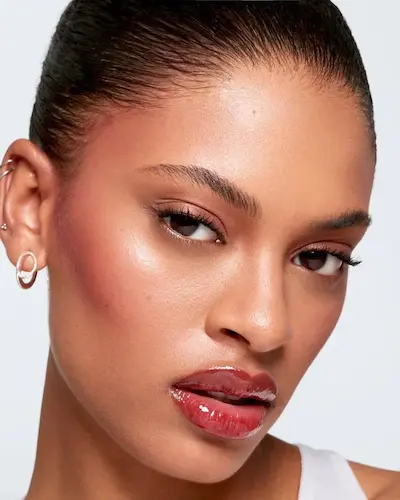
Pregătirea pielii pentru machiajul luminos
Machiajul luminos începe nu cu fondul de ten, ci cu starea pielii. Chiar și cele mai scumpe produse nu vor oferi efectul de glow și glass skin dacă pielea este deshidratată, ternă sau are o textură neuniformă.
O pregătire corectă a pielii intensifică luminozitatea naturală, ajută machiajul să se așeze uniform și creează un efect de ten îngrijit, „viu”, fără încărcare.
- Curățare — un produs delicat care nu afectează bariera naturală a pielii
- Hidratare — cremă ușoară sau gel pentru efect de ten „plin” și luminos
- SPF — protecție UV și menținerea unui ton uniform al pielii
- Bază luminoasă (glow primer) — accentuează efectul de „strălucire din interior”
Înainte de aplicarea machiajului, este important ca produsele de îngrijire să fie complet absorbite timp de 5–10 minute. Acest pas ajută la un finish uniform și previne încărcarea sau strângerea produselor, menținând efectul de ten luminos natural pe tot parcursul zilei.
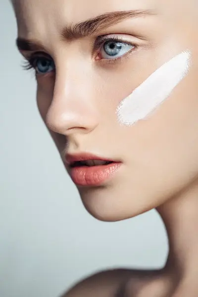
Machiaj luminos pas cu pas
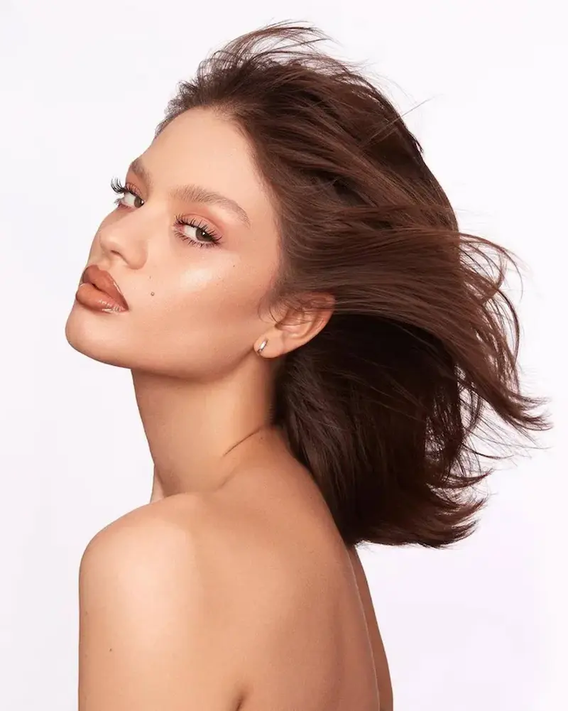
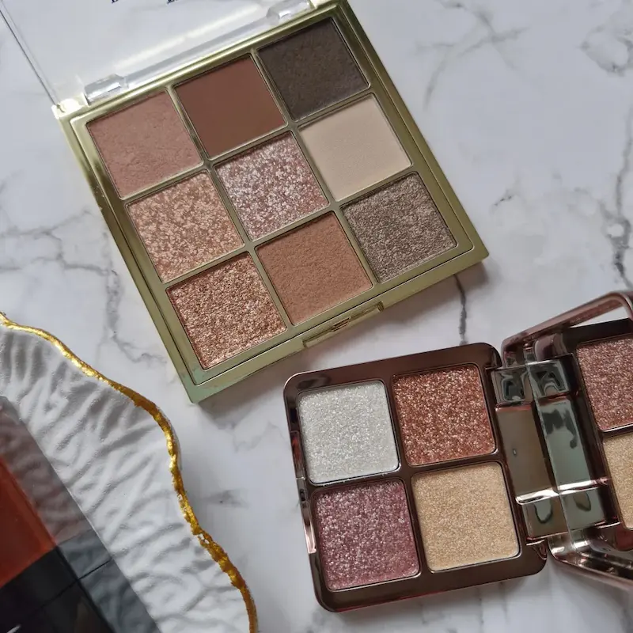
Machiajul luminos se bazează pe hidratare, lumină și lejeritate. Scopul său nu este să ascundă pielea, ci să creeze efectul de glow sănătos, ca și cum pielea ar străluci din interior. Este ideal pentru ședințe foto, look-uri de zi cu zi și un aspect îngrijit, „luxos”.
Fond de ten ușor sau BB cream
Alege un fond de ten cu finish luminos sau hidratant. Trebuie să uniformizeze tenul, dar să păstreze un aspect natural și radiant, fără efect de mască.
Corector
Aplică punctual: sub ochi, pe roșeață și imperfecțiuni. Păstrează cât mai mult din luminozitatea naturală a pielii.
Blush cremos
Texturi cu efect de „strălucire din interior”. Oferă un aspect proaspăt și intensifică efectul de machiaj glow.
Iluminator
Aplică pe pomeți, podul nasului și colțurile interne ale ochilor. Strălucirea trebuie să fie naturală, nu excesivă.
Sprâncene și gene
Fixare ușoară și volum natural. Fără linii dure — accent pe un look curat și fresh.
Buze
Balsam sau gloss cu finish umed pentru un efect final de prospețime.
Machiajul luminos evidențiază sănătatea pielii și creează efectul de „glass skin” — un look fresh, îngrijit și vizibil mai tânăr, fără încărcare.
Top produse pentru machiaj natural
Pentru un machiaj natural este important să alegi texturi ușoare și produse care lucrează cu pielea, nu o acoperă complet.
Recenzie independentă. Produsele nu sunt sponsorizate.
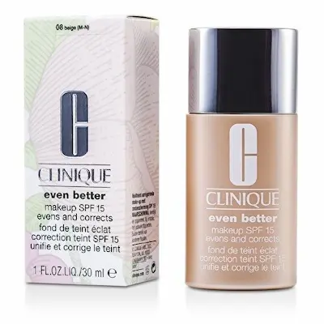
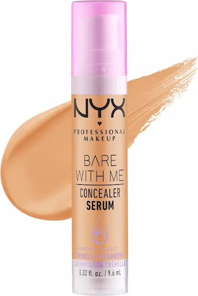
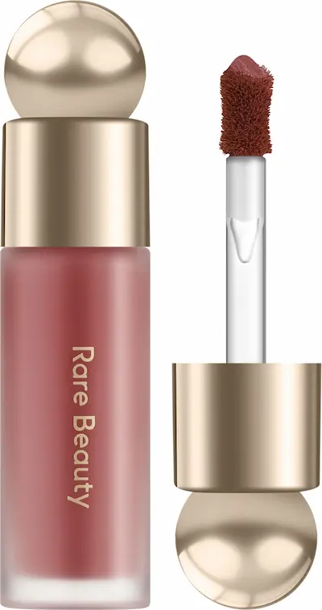
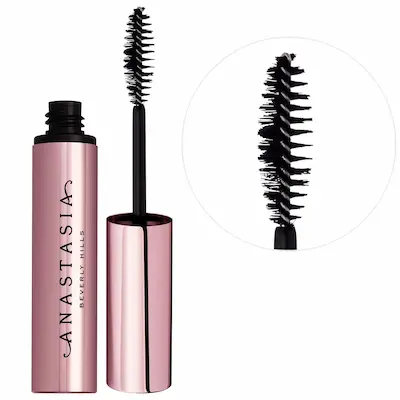
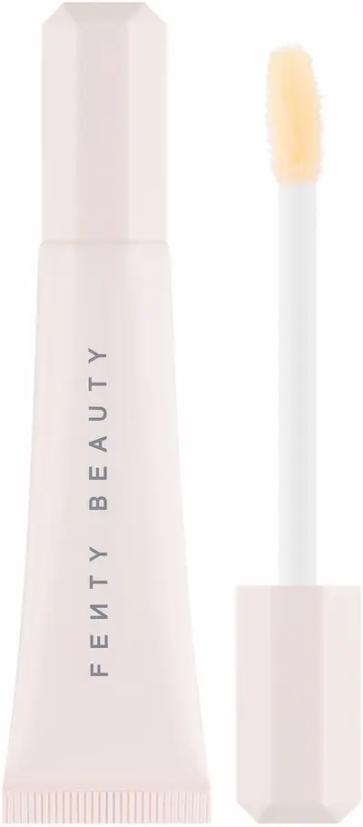
Greșeli frecvente în machiajul luminos
- fond de ten prea dens care „stinge” efectul de glow
- iluminator în exces cu aspect de piele grasă
- lipsa echilibrului între zonele luminoase și cele mate
- piele nepregătită sau deshidratată
- prea multe straturi de produse
Machiajul luminos poate fi ușor compromis: în loc de efect de ten sănătos și radiant, poate apărea un aspect de piele încărcată sau grasă. Principiul de bază este luminozitatea controlată și texturile ușoare.
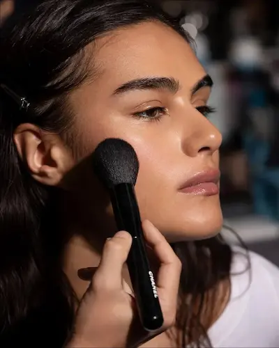
Cum obții efectul glow fără luciu gras
Cea mai frecventă greșeală în machiajul luminos este confuzia între glow-ul sănătos și luciul gras. Efectul glow înseamnă strălucire controlată, nu luciu excesiv pe toată fața.
1. Glow-ul începe cu îngrijirea pielii
O piele hidratată are deja un aspect luminos natural. Folosește creme ușoare, seruri sau baze cu efect glow pentru o bază perfectă.
2. Fond de ten lejer, nu acoperire grea
Alege fonduri de ten cu textură fină și finish natural sau luminos. Produsele dense reduc efectul de piele vie.
3. Iluminare punctuală, nu pe toată fața
Aplică iluminator doar în zonele unde cade natural lumina: pomeți, nas, arcul buzei. Astfel obții efectul de „luminozitate din interior”.
4. Controlul zonei T
Pudra ușoară doar în zona T ajută la evitarea luciului gras, păstrând glow-ul pe obraji și pomeți.
5. Mai puține straturi
Cu cât sunt mai multe produse, cu atât crește riscul de încărcare. Machiajul glow funcționează cel mai bine minimalist.
Glow-ul ideal înseamnă echilibru: piele proaspătă, hidratată și luminoasă, fără efect de încărcare sau luciu excesiv.
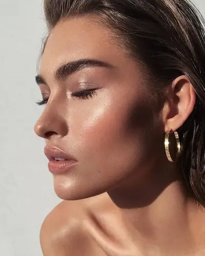
Cui i se potrivește machiajul luminos
Machiajul luminos este versatil, dar trebuie adaptat fiecărui tip de ten. Efectul glow trebuie să evidențieze frumusețea naturală, nu imperfecțiunile.
- Ten normal: se pot folosi texturi luminoase fără restricții — echilibrul natural permite glow complet.
- Ten uscat: ideal pentru machiaj glow, dar necesită hidratare intensă și produse cremoase.
- Ten mixt: glow pe pomeți, zona T ușor matifiată.
- Ten gras: glow controlat — iluminator minim și fixare ușoară.
- Ten cu textură sau acnee: glow delicat, evitând zonele problematice.
Glow-ul ideal înseamnă echilibru: pielea arată fresh, îngrijită și natural luminoasă, fără efect încărcat.
Set buget pentru machiaj luminos (până la 500 MDL)
💡 Cost total estimativ al setului: ~470–520 MDL
Recenzie independentă. Produsele nu sunt sponsorizate.
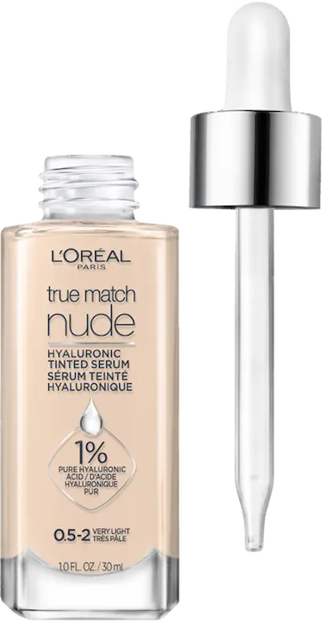
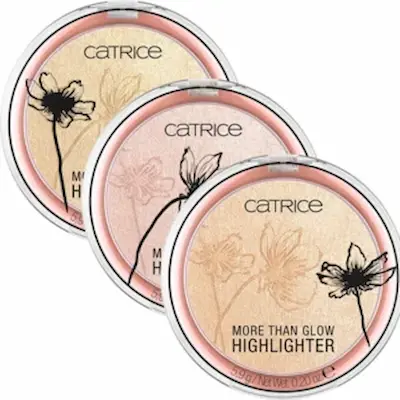
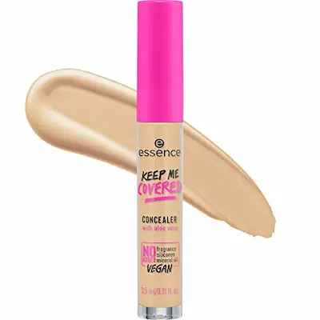
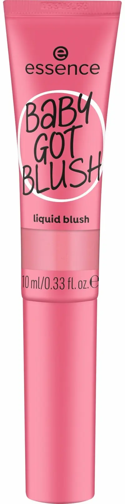
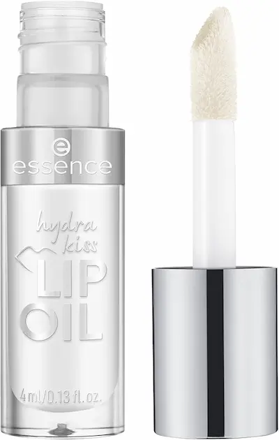
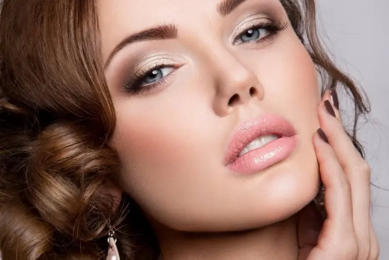
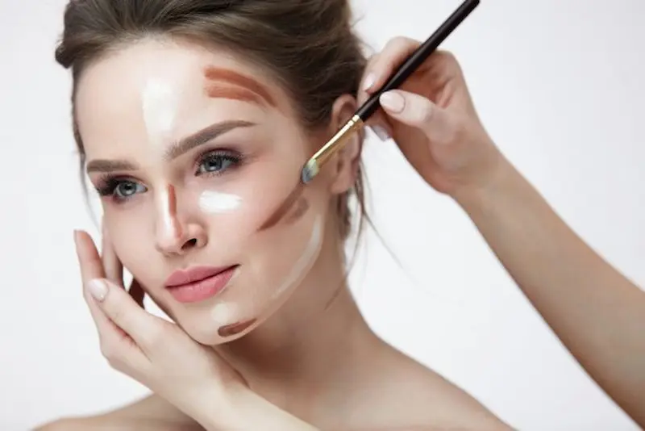
Nu ești sigură cum să obții un efect perfect de piele luminoasă?
Machiajul luminos (glow makeup) necesită un echilibru precis: îngrijire corectă a pielii, texturi lejere și o tehnică de aplicare potrivită. Un singur pas greșit — și în loc de glow, apare un aspect de ten gras sau un machiaj încărcat.
Programează-te la un make-up artist profesionist și obține un machiaj care îți evidențiază pielea, creează efectul de „strălucire din interior” și arată natural în orice tip de lumină.
Programează-te pentru machiaj luminosÎntrebări frecvente despre machiajul luminos (glow)
Este potrivit machiajul luminos pentru tenul gras?
Da, dar este important echilibrul. Folosește texturi ușoare cu efect glow și fixează zona T cu pudră matifiantă pentru a evita luciul excesiv. Luminozitatea trebuie să arate ca un ten sănătos, nu ca piele grasă.
Care este diferența dintre machiajul glow și cel natural?
Machiajul natural urmărește un aspect cât mai neutru, în timp ce machiajul luminos pune accent pe lumină și prospețime. Tenul arată mai hidratat, radiant și „iluminat din interior”.
Se poate face machiaj luminos dacă ai acnee?
Da, dar cu atenție. Folosește corector punctual și evită iluminarea intensă pe zonele cu imperfecțiuni. Concentrează efectul glow pe pomeți și partea superioară a feței.
Cum obții efectul de „strălucire din interior”?
Secretul principal este pregătirea pielii. Hidratarea corectă, serurile cu efect glow și fondurile de ten lejere creează acel efect natural de piele radiantă, fără încărcare.
Este potrivit machiajul luminos pentru zi de zi?
Da, dacă este adaptat. Pentru machiajul de zi alege un glow discret, fără particule mari de shimmer — astfel machiajul va arăta elegant și potrivit chiar și la birou.
Este necesară pudra în machiajul glow?
Da, dar în cantitate minimă. Pudra se aplică doar unde este nevoie, de obicei în zona T, pentru a menține echilibrul între luminozitate și un aspect îngrijit.